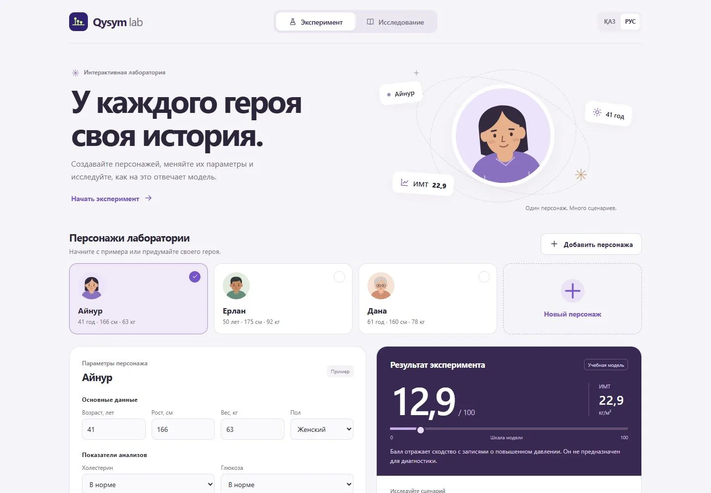
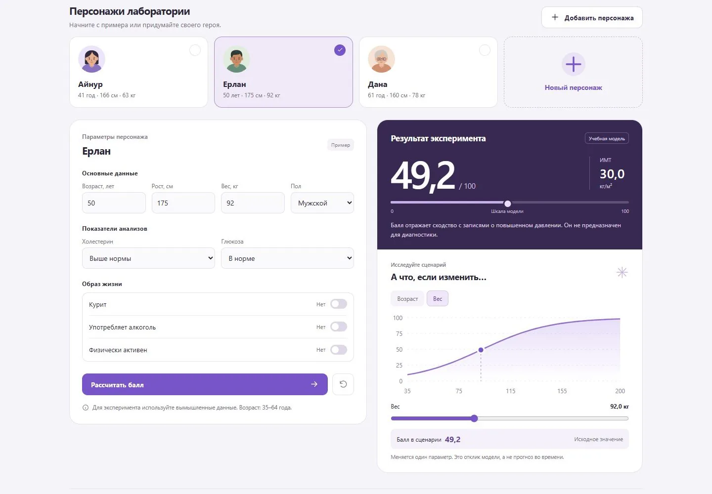
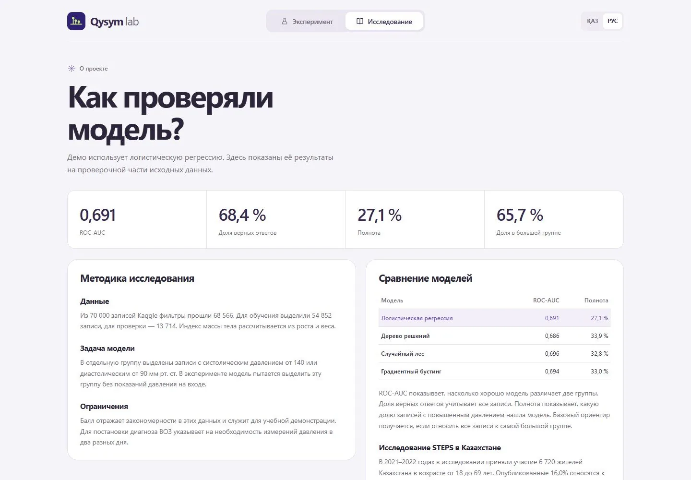
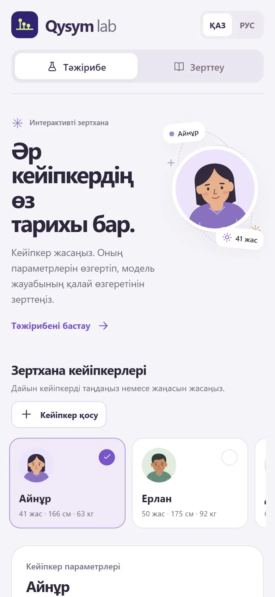

Учебное приложение
Qysym Lab
Интерактивная лаборатория к школьному исследованию о давлении.

Первый экран: персонажи лаборатории и результат эксперимента
О проекте
Учебное веб-приложение и Android-APK к школьному исследованию о повышенном давлении. Посетитель выбирает или создаёт персонажа, меняет параметры и видит, как отвечает модель логистической регрессии, обученная на открытом датасете. Это учебная демонстрация, а не медицинский инструмент: интерфейс на казахском и русском, расчёт идёт в браузере без сети.
Что внутри
- Персонажи с оригинальными векторными аватарами
- Сценарий «А что, если…» для возраста и веса
- Раздел о методике, метриках и ограничениях модели
- Қазақша / русский, офлайн, Android APK
Экраны проекта





